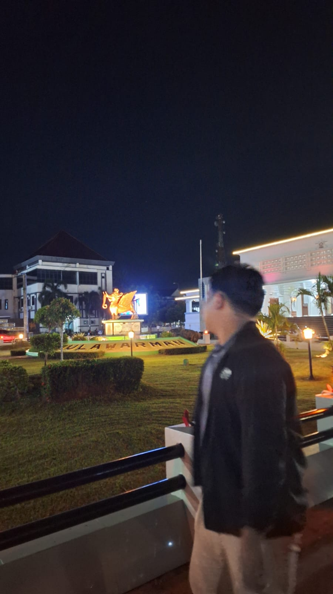
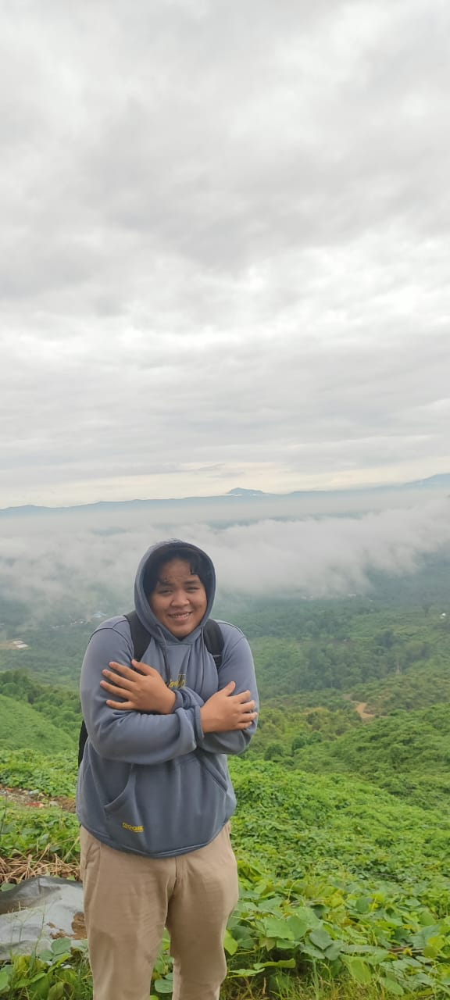
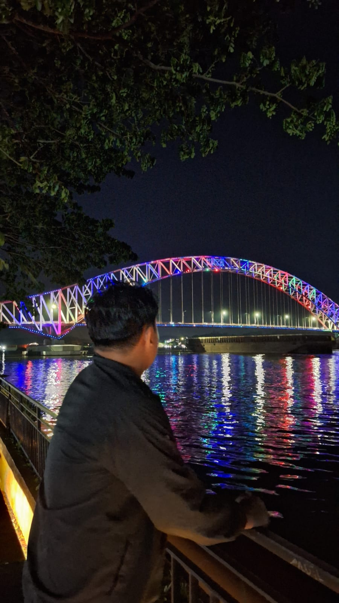

JALAN JALAN
Berikut ini foto-foto saya ketika sedang libur semester :p





Berisi gambar gambar random ya :D
Kali ini izinkan saya memperkenalkan diri saya. Saya Adhe Bhima Surya Saputra. Saya lahir di Tanah Grogot, 15 Februari 2005. Saya saat ini sudah menjadi mahasiswa di Universitas Mulawrman. Di Samarinda saya hidup menjadi anak kos, letak kos saya ada di Perjuangan 6. Oh iya foto disebelah saya itu saat saya masih kecil untuk umur nya saya lupa :D. Sekalian saja saya tampilkan foto saya ketika masih kecil.
Itu tadi merupakan foto-foto ketika masih kecil. Saya sendiri tidak tau berapa umur saya saat di foto tersebut. Banyak kenangan yang terjadi ketika kita masih kecil kadang ada kenangan yang tak terlupakan dan ada kenangan yang hilang begitu saja.
Saya memiliki 2 saudara. Bisa diliat dari gambar disamping. Saya yang memakai baju berwarna hitam. Lalu disebelah saya yang memakai baju berwarna cream merupakan kakak saya yang pertama bernama Septian Bagus Saputra. Lalu disebelahnya lagi merupakan kakak saya yang kedua bernama Aditya Dwi Dharma Saputra. Biasanya kami berkumpul bertiga disaat lebaran. Namun disaat liburan kadang hanya saya bedua saja dengan kakak saya yang kedua berkumpul karena harus menunggu kakak saya yang pertama cuti terlebih dahulu. Oiya pada foto sebelah kanan, disebelah saya dan kakak saya Asep itu merupakan tante saya yang memberikan saya dan kedua kakak saya lembaran kebahagiaan pada hari lebaran :D.
Ini pertama kali pengalaman saya ikut oraganisasi. Disini saya menjadi ketupat (Ketua Panitia). Pengalaman saya ini cukup menyenangkan karena saya bisa belajar banyak mengenai kerja sama, terus kejar kejaran nyari tempat dan lain sebagainya. Namun saya rasa cukup sekali untuk mengikuti hal yang seperti ini.
Berikut ini foto-foto saya ketika sedang libur semester :p